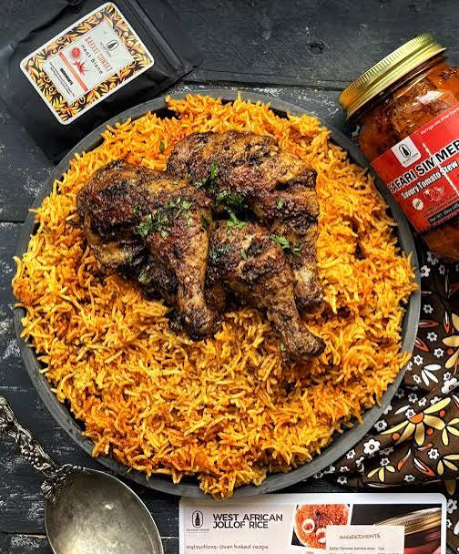

Chicken pilau

Description
Chicken pilau is a dish simply made of fried chicken pieces and some very strong spices that turn in into brown and very tasty and aromatic!
Ingredients
- Rice
- Chicken
- Red onions
- Garlic and ginger
- Carrots
- Cooking oil
- Tomato paste
- Pilau masala
- Salt
- Water
Steps on how to make it
- Prepare and organise your cooking space and make sure you have all the ingredients
- Chop all your ingredients and also wash the rice to remove the starch
- Get your pan and put it on heat and pour in some oil
- Put in the chopped onions from before and cook them till they turn golden brown
- Put in your chicken pieces and fry them along with the onions
- On turning golden brown, pour in your masala, garlic and ginger to enhance spice
- Put your tomato paste and add less water plus the rice to prevent burning
- After stiring abit add a few cups of water according to the rice you cooked
- Reduce the heat,add in the chopped carrots and stir and let it cook till its ready